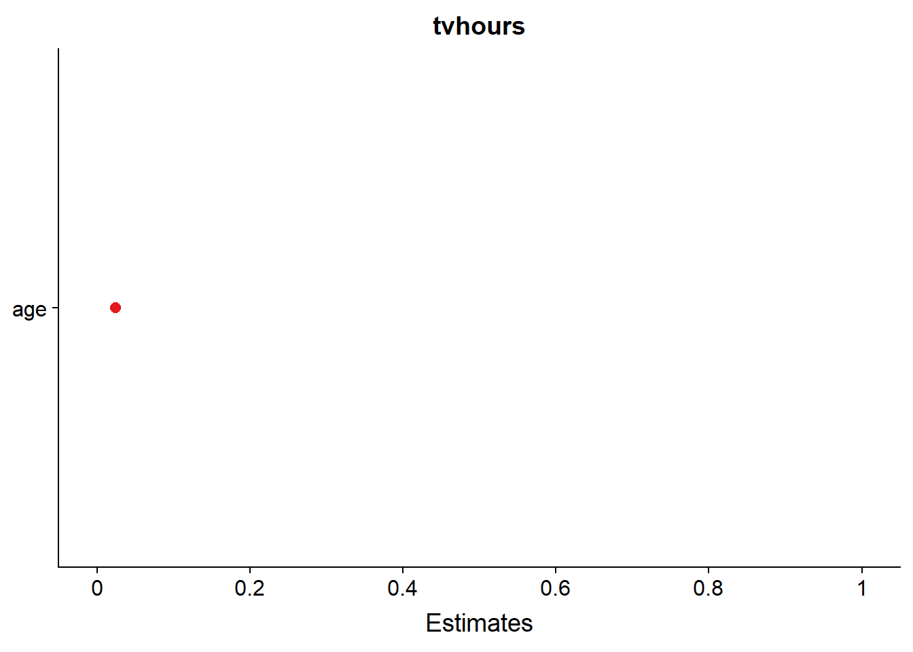

forcats is a package that is designed to mke working with factors (if not fun) easy
Factors provide us with a way for handling categorical variables
Additionally, factors make graphing data easier (especially in regards to ordering values)
There are some nice templates available for graphing from the papajapackage. These are APA templates. Go ahead and install them if you are interested.
devtools::install_github("crsh/papaja")gss_catR uses a specific formula syntax for building models.
Depedent Variable ~ Indepedent Variable
This syntax is generally consistent across all modeling functions (exceptions include some tree based methods)
We can add main effects with a + and internation effects with :. We can expand indepdent variables to include main and interaction effects with * (e.g. (\(predictor1*predictor2 = predictor1 + predictor2 + predictor1*predictor2\)))
\[tvhours = \beta_1*age + \beta_2*partyid + \alpha + \epsilon\]
fit_1 <- lm(tvhours ~ age + partyid, data = gss_cat)summary will return some of the summary statistics for our model fit
summary(fit_1)##
## Call:
## lm(formula = tvhours ~ age + partyid, data = gss_cat)
##
## Residuals:
## Min 1Q Median 3Q Max
## -4.2138 -1.5200 -0.5816 0.8121 21.3831
##
## Coefficients:
## Estimate Std. Error t value Pr(>|t|)
## (Intercept) 2.21689 0.33947 6.530 6.84e-11 ***
## age 0.02080 0.00140 14.861 < 2e-16 ***
## partyidDon't know -0.92422 2.57160 -0.359 0.7193
## partyidOther party -0.35650 0.37523 -0.950 0.3421
## partyidStrong republican -0.57712 0.34040 -1.695 0.0900 .
## partyidNot str republican -0.57141 0.33814 -1.690 0.0911 .
## partyidInd,near rep -0.42938 0.34175 -1.256 0.2090
## partyidIndependent -0.03684 0.33676 -0.109 0.9129
## partyidInd,near dem -0.34747 0.33914 -1.025 0.3056
## partyidNot str democrat -0.13155 0.33700 -0.390 0.6963
## partyidStrong democrat 0.22855 0.33717 0.678 0.4979
## ---
## Signif. codes: 0 '***' 0.001 '**' 0.01 '*' 0.05 '.' 0.1 ' ' 1
##
## Residual standard error: 2.55 on 11288 degrees of freedom
## (10184 observations deleted due to missingness)
## Multiple R-squared: 0.03138, Adjusted R-squared: 0.03052
## F-statistic: 36.57 on 10 and 11288 DF, p-value: < 2.2e-16Yuck!
forcats functionsReduce partyid to 3 categories?
dat_2 <- gss_cat %>%
mutate(partyid = fct_recode(partyid,
Dem = "Strong democrat",
Dem = "Not str democrat",
Ind = "Ind,near rep",
Ind = "Independent",
Ind = "Ind,near dem",
Rep = "Strong republican",
Rep = "Not str republican",
Rep = "Not str republican"))fit_2 <- lm(tvhours ~ age + partyid, data = dat_2)
summary(fit_2)##
## Call:
## lm(formula = tvhours ~ age + partyid, data = dat_2)
##
## Residuals:
## Min 1Q Median 3Q Max
## -4.1226 -1.5151 -0.5782 0.8035 21.5717
##
## Coefficients:
## Estimate Std. Error t value Pr(>|t|)
## (Intercept) 2.204546 0.339904 6.486 9.2e-11 ***
## age 0.021047 0.001392 15.125 < 2e-16 ***
## partyidDon't know -0.920158 2.575693 -0.357 0.721
## partyidOther party -0.355139 0.375828 -0.945 0.345
## partyidRep -0.573454 0.336083 -1.706 0.088 .
## partyidInd -0.218230 0.334799 -0.652 0.515
## partyidDem 0.044845 0.335068 0.134 0.894
## ---
## Signif. codes: 0 '***' 0.001 '**' 0.01 '*' 0.05 '.' 0.1 ' ' 1
##
## Residual standard error: 2.554 on 11292 degrees of freedom
## (10184 observations deleted due to missingness)
## Multiple R-squared: 0.02794, Adjusted R-squared: 0.02743
## F-statistic: 54.1 on 6 and 11292 DF, p-value: < 2.2e-16Here we can specify the generalised linear model family we want to use in the glm function with the family argument. If we dont specify a family it will use the default of gaussian or a basic linear regression.
fit_3 <- glm(tvhours ~ age + partyid, data = dat_2)summary(fit_3)##
## Call:
## glm(formula = tvhours ~ age + partyid, data = dat_2)
##
## Deviance Residuals:
## Min 1Q Median 3Q Max
## -4.1226 -1.5151 -0.5782 0.8035 21.5717
##
## Coefficients:
## Estimate Std. Error t value Pr(>|t|)
## (Intercept) 2.204546 0.339904 6.486 9.2e-11 ***
## age 0.021047 0.001392 15.125 < 2e-16 ***
## partyidDon't know -0.920158 2.575693 -0.357 0.721
## partyidOther party -0.355139 0.375828 -0.945 0.345
## partyidRep -0.573454 0.336083 -1.706 0.088 .
## partyidInd -0.218230 0.334799 -0.652 0.515
## partyidDem 0.044845 0.335068 0.134 0.894
## ---
## Signif. codes: 0 '***' 0.001 '**' 0.01 '*' 0.05 '.' 0.1 ' ' 1
##
## (Dispersion parameter for gaussian family taken to be 6.523095)
##
## Null deviance: 75776 on 11298 degrees of freedom
## Residual deviance: 73659 on 11292 degrees of freedom
## (10184 observations deleted due to missingness)
## AIC: 53264
##
## Number of Fisher Scoring iterations: 2library(lme4)## Loading required package: Matrix##
## Attaching package: 'Matrix'## The following object is masked from 'package:tidyr':
##
## expandfit_4 <- lmer(tvhours ~ age + (1|race) + (1| partyid), data = dat_2)
sjPlot::plot_model(fit_4, type = c("re"))## [[1]]##
## [[2]]sjPlot::plot_model(fit_4, type = c("est"))## Computing p-values via Wald-statistics approximation (treating t as Wald z).
Now an example where we get an sav file from NORC for the actual GSS. In this example you will see that it comes in with numbers rather than the labels. This can be problematic.
library(haven)
# Purpose: import data from 2016 GSS and format for R
url <- "http://users.wfu.edu/dewittme/data/sample/GSS2016.sav"
# Read Raw Data
raw_data <-read_spss(url)Uh oh
head(raw_data)But what does this <s3: labelled> mean???
attributes(raw_data$MAR1)## $label
## [1] "Marital status of 1st person"
##
## $format.spss
## [1] "F1.0"
##
## $class
## [1] "labelled"
##
## $labels
## IAP MARRIED WIDOWED DIVORCED SEPARATED
## 0 1 2 3 4
## NEVER MARRIED DK NA
## 5 8 9clean_data_1 <- labelled::to_factor(raw_data)
clean_data_1 %>% head()library(codebook)
codebook::codebook(raw_data)library(papaja)
gss_cat %>%
ggplot(aes(rincome))+
geom_bar()+
labs(
title = "Missing Income Data Is High",
subtitle = "How does this effect our conclusions?",
caption = "Data: General Social Survey",
x= "income",
y = "count"
)+
theme_apa()+
coord_flip()gss_cat %>%
mutate(relig = fct_lump(relig, n = 5)) %>% # Lump into five categories
mutate(relig = fct_inorder(relig)) %>% # Reorder from most to least
ggplot(aes(relig, tvhours))+
geom_jitter()+
labs(
title = "Missing Income Data Is High",
subtitle = "How does this effect our conclusions?",
caption = "Data: General Social Survey",
x= "income",
y = "count"
)## Warning: Removed 10146 rows containing missing values (geom_point).
Introduction to R
dewittme.wfu.edu
Office of Institutional Research
309 Reynolda Hall
Winston- Salem, NC, 27106
Copyright © 2018 Michael DeWitt. All rights reserved.